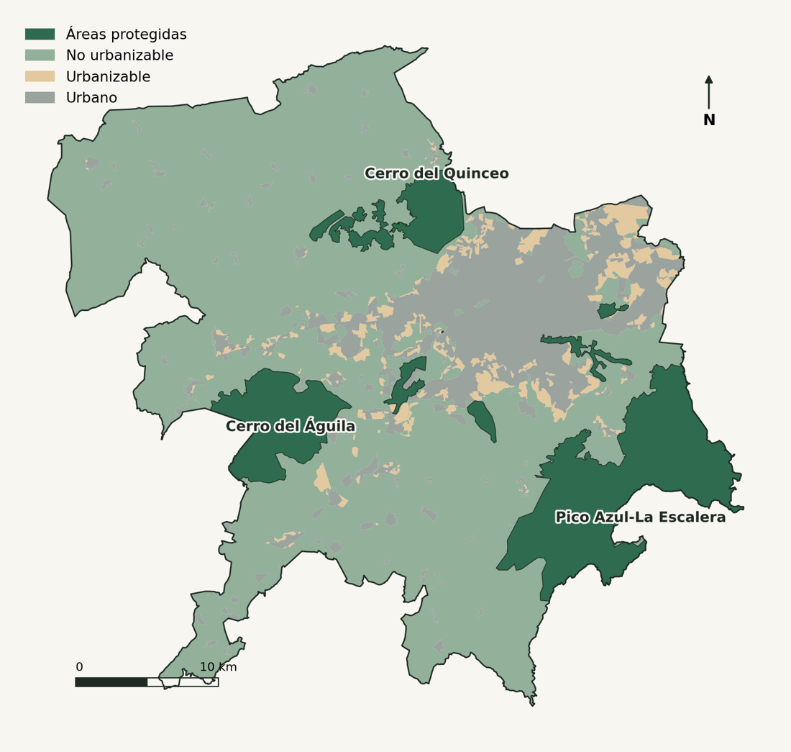

La investigación en cuatro preguntas
Un recorrido por la investigación que sostiene el observatorio. Cada paso termina en la parte del sitio donde puedes verlo por tu cuenta: el mapa, los datos o la participación.
¿Cómo se relaciona el crecimiento de las ciudades con la pérdida de bosque?
Por lo que demandan sus habitantes: vivienda y alimento
Es un modelo de trabajo a partir de la literatura, no un resultado. La ciudad crece sobre su propio borde para dar vivienda. Y el bosque se pierde también por la demanda de alimento de otras ciudades y mercados: en el sur de Morelia, la huerta de aguacate. Entre la demanda y la pérdida está la regulación del suelo.

¿Cómo se diferencian los patrones de cambio de la cubierta forestal?
Sobre todo degradación; la conversión es huerta y urbanización
El mapa dice dónde; la revisión de cientos de lugares, cuánto. En la mayor parte de la pérdida el bosque se abre pero no desaparece: es degradación. Cuando sí cambia, se vuelve huerta en el bosque o urbanización en el borde.
Aclareo del bosque
El dosel se abre en parches, a menudo con incendio. Es el patrón mayor y crece en el periodo. Casi nunca tiene un uso vecino: es un proceso interno del bosque.
Huerta por brechas
Aguacate en hileras, casi siempre con bordo u olla de agua. Se llega por caminos que se abren antes del desmonte, y la huerta nueva se pega a la anterior.
Lotificación
Manzanas o lotes trazados sobre vialidad formal, en suelo urbano y urbanizable. A veces el lote trazado queda vacío años antes del desmonte.
Una regularidad: la pérdida llega por donde ya se puede llegar. La mayor parte del área perdida tiene un camino junto o dentro, mucho más que el bosque que se conserva.
¿Ocurre cambio donde no debe?
Sí, bajo decreto
Hay pérdida en las áreas naturales protegidas y en el suelo que el programa municipal no destina a la urbanización. En las áreas protegidas, casi toda ocurrió con su decreto ya vigente. En el suelo no urbanizable la comparación es con el programa de 2023, aplicado hacia atrás: el régimen de cada año es lo que sigue en la investigación, junto con cómo trata la administración ese cambio.
El observatorio registra cambios de cubierta y de uso del suelo. No califica su legalidad ni identifica responsables (qué se puede afirmar con estos datos).
¿Qué puede aportar un observatorio ciudadano a la gobernanza forestal?
Medir con error declarado y verificar entre muchos
El primer módulo, «Verificar», muestra lugares del mapa sobre la imagen de satélite más reciente y te pide decir qué hay hoy, después de un tutorial. Comparar esas respuestas con la revisión experta dice qué parte de la pérdida ve quien no es especialista, y con cuánta anticipación puede hacerse pública.